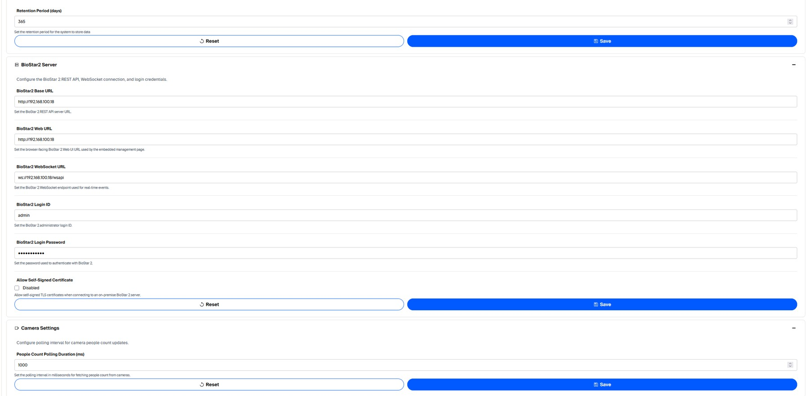
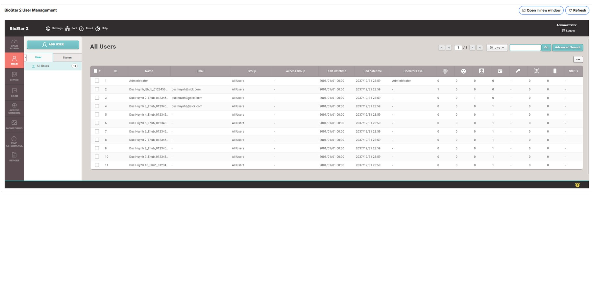
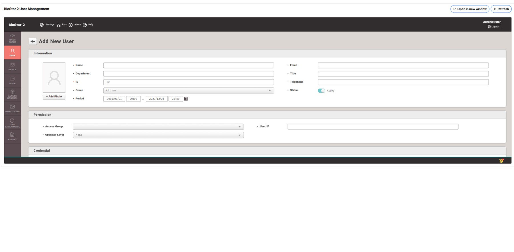
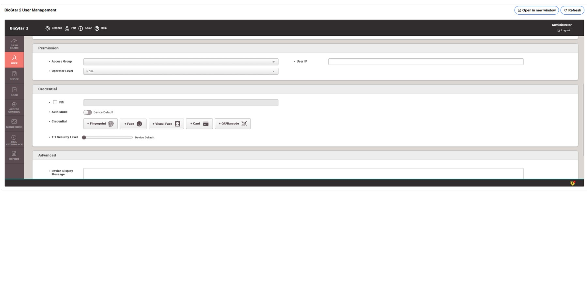

BioStar 2 Integration & User Enrollment
BioStar 2 is the source of truth for worker users, credentials and physical access devices. AI LOTO uses server-side BioStar credentials to receive events, synchronize access-device references and embed the BioStar User page.
1. Prepare BioStar 2 for LOTO
- Install/start BioStar 2 and confirm its Web/API service is reachable from the AI LOTO server.
- Prepare each Suprema fingerprint/face/card scanner on the network: assign its approved unique IP configuration and confirm the BioStar server can reach its device port (normally 51211 for Server → Device). The scanner can then be searched and registered from LOTO Gate Access Device Management; it does not have to be manually pre-created in BioStar when using this workflow.
- Ensure BioStar successful authentication events are available through the configured real-time WebSocket endpoint.
- Use a BioStar account with sufficient rights for the LOTO integration tasks (session creation, user page, device operations).
- In AI LOTO Settings → BioStar2 Server, configure the REST Base URL, browser-facing Web URL, WebSocket URL, Login ID and Login Password.
- For an on-premise installation using a trusted internal/self-signed certificate, enable Allow Self-Signed Certificate only when approved for that deployment.
- Save, then open BioStar 2 User Management in LOTO to validate the embedded session.
2. BioStar settings in LOTO

| Setting | Purpose |
|---|---|
| BioStar2 Base URL | REST API server URL used by the backend. |
| BioStar2 Web URL | Browser-facing BioStar Web UI URL used by the embedded management feature and “Open in BioStarâ€. |
| BioStar2 WebSocket URL | Real-time event endpoint used to receive access/authentication events. |
| BioStar2 Login ID / Password | Integration account used server-side by AI LOTO. |
| Allow Self-Signed Certificate | Lets backend HTTPS calls accept a self-signed BioStar certificate. |
| BioStar Event Debounce Window | Suppresses rapid duplicate events from the same user/device. Default 1000 ms. |
3. Create a BioStar worker from the LOTO UI
Admin users can open BioStar 2 User Management in the LOTO sidebar. The embedded BioStar page opens directly to the BioStar user list using a backend-created session, so a second manual BioStar login is normally not required.

- Open BioStar 2 User Management.
- Click Add User inside the embedded BioStar UI.
- Enter the worker's BioStar user name with format "User Name_Team Name_Phone Number" and other required identity information.
- In the Credential area, enroll the required credential: fingerprint, visual face and/or card/NFC according to the Suprema device in use.
- Apply/save the BioStar user. If BioStar user synchronization is configured, confirm the user is synchronized to the intended access device(s).
- Perform a controlled authentication at the assigned gate and confirm the event appears in LOTO Access Event Historian.


Official Suprema guidance
4. Connect and register a BioStar scan device from LOTO
AI LOTO can commission the BioStar access-device reference directly from Gate Access Device Management. For the normal workflow, you only need the physical scanner's correct IP address and device communication port. LOTO/BioStar determine the device identity from the TCP search result.
4.1 Network preparation
| Item | What to check |
|---|---|
| Scanner IP | Use the IP assigned to the physical Suprema scanner. Do not enter the BioStar server or LOTO server IP. |
| Uniqueness | The IP must not duplicate another device on the network. |
| Subnet / routing | BioStar 2 must be able to route to the scanner. Use the correct subnet mask and default gateway for the site's network design. |
| Address stability | Use a static IP or approved DHCP reservation for production so the scanner address remains predictable. |
| Device port | The standard Suprema device port is 51211. Enter a different port only if the scanner was deliberately configured to use one. |
| Connection mode | The normal LOTO direct TCP-search workflow uses Server → Device. BioStar initiates the connection to the scanner. |
4.2 Register the scanner
- Open Gate Access Device Management.
- Click New.
- Enter the scanner's exact IP Address.
- Confirm the Port; normally 51211.
- Click TCP Search. This asks BioStar 2 to search that exact IP/port.
- Select the detected device from the result list. The BioStar Device ID and other detected metadata are populated from BioStar.
- Review the BioStar name.
- Optionally select the LOTO Gate. Leave No gate if the gate will be configured later.
- Keep Enabled selected for a scanner used in normal operation.
- Click Save. LOTO registers the device in BioStar 2 when required and automatically creates/updates the local Access Device record.
- Confirm the device appears in the list and becomes Connected. Finally, verify that it is mapped to the intended Gate.

4.3 If Device → Server is intentionally used
BioStar 2 also supports Device → Server. In that topology, the scanner initiates the connection to BioStar and must be configured with the correct BioStar server address/port. Such a device can appear under the waiting-device workflow. Use this mode only when it is part of the approved network design; the standard LOTO direct-registration instructions above assume Server → Device.
4.4 Synchronize a device already added in BioStar
If a scanner was registered directly in BioStar 2, use Sync from BioStar on Gate Access Device Management. LOTO matches devices by BioStar Device ID and creates/updates the local reference without requiring manual copying of that ID.
Official Suprema device-connection guidance
5. What LOTO expects from BioStar events
- Successful event type in the IDENTIFY_SUCCESS… or VERIFY_SUCCESS… families.
- A valid BioStar user ID.
- A valid BioStar device ID that maps to a local Access Device.
- The Access Device is assigned to a LOTO Gate.
Authentication method is classified from the event name: Fingerprint, Face or Card/NFC. Events that do not meet the accepted-success pattern are not treated as worker IN/OUT transitions.